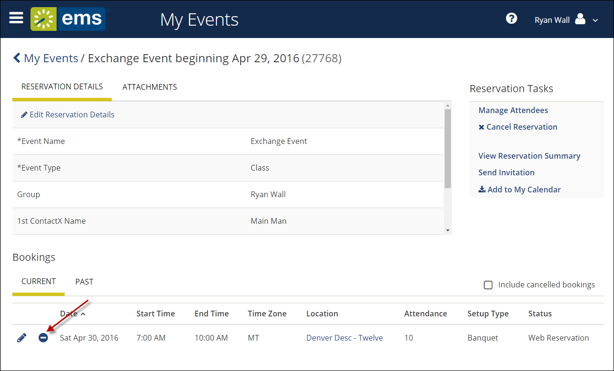

Cancel Your Reservations and Bookings
This section guides you to work with bookings in the Reservation Details page on , where you can view, add, change, or cancel services and attendees for a booking. For an overview, see Add Reservation Details. A reservation may contain multiple bookings, so the procedures below guide you in applying your changes to more than one booking within a reservation.
This topic provides information on the following:
Cancel Reservations
- Navigate to the reservation with which you wish to work: click MY EVENTS on the main menu (or from the My Bookings area on MY HOME). Then click on a Reservation.

Tip: When you click to edit a Reservation or Booking, the page that opens depends upon the type of booking that you are editing—a booking for reserving a room, a booking for requesting a room, or a booking for services only.
- From the Reservation Details page, click Cancel Reservation.

Warning: Canceling a reservation will also cancel all bookings under the reservation.
- In the Cancel Reservation? popup that appears, select a Cancel Reason, add Cancel Notes, and then confirm that you want to cancel.

Your MY EVENTS pages refreshes, and the reservation is canceled.
Cancel Bookings
- From the Reservation Details page in the Bookings area, to cancel a single booking, click the date of the booking or the Remove (-) icon next to the booking. These options are available if your administrator has given you permission.

Tip: To cancel multiple bookings, click Cancel Bookings in the upper corner of your My Events list.
- In the Cancel Booking? popup that appears, select a Cancel Reason, add Cancel Notes, and then confirm that you want to cancel.
Your MY EVENTS page refreshes and the booking is canceled.